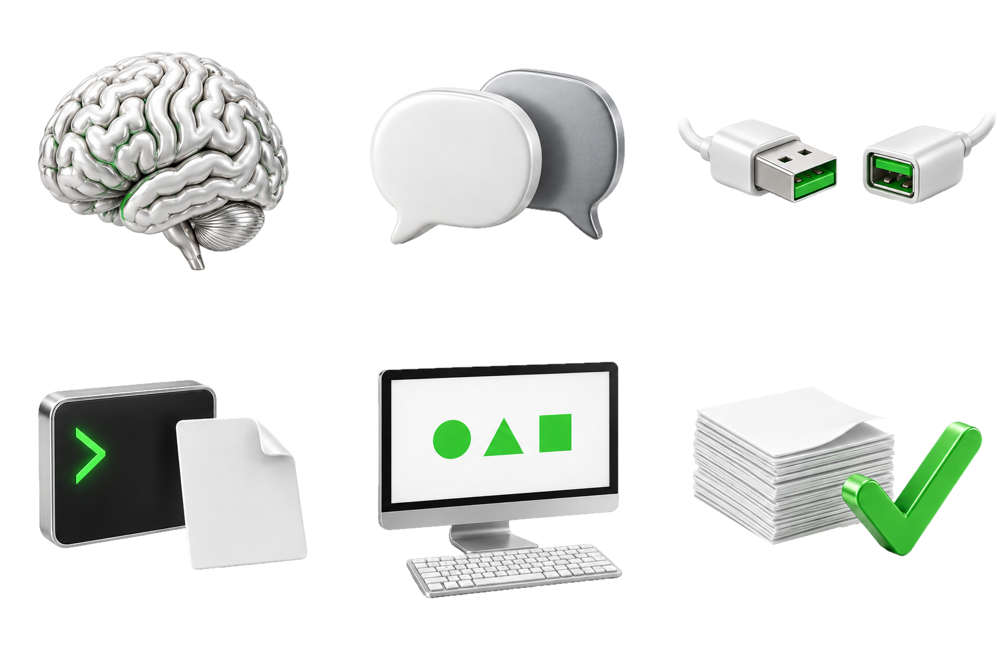
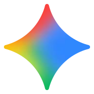
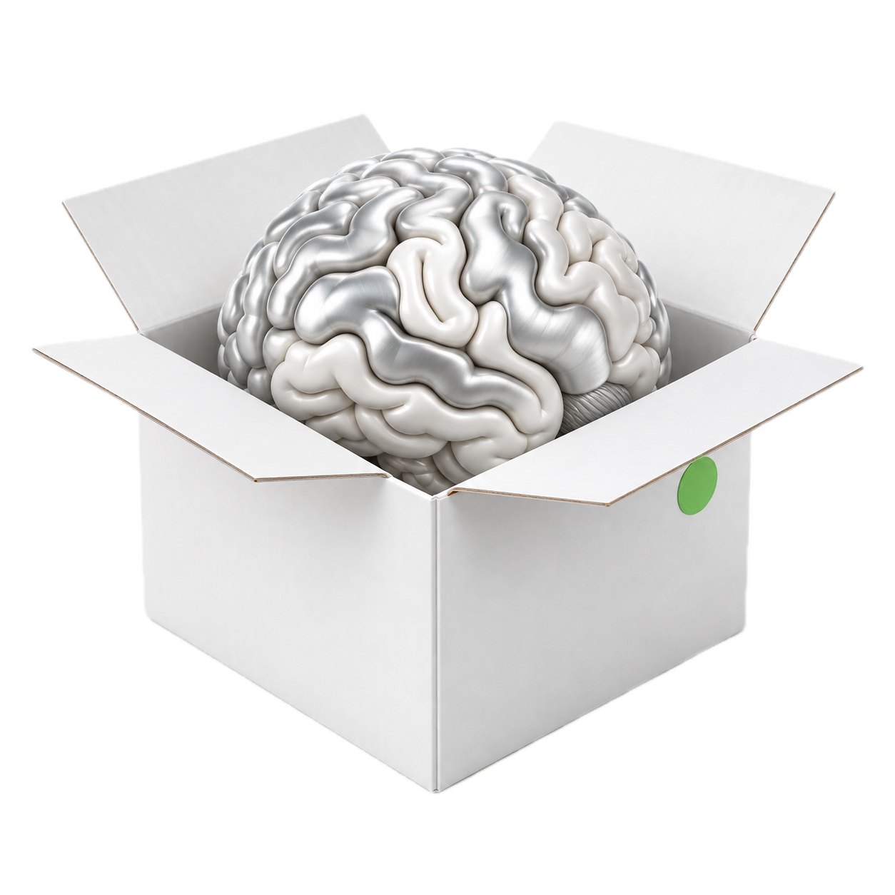
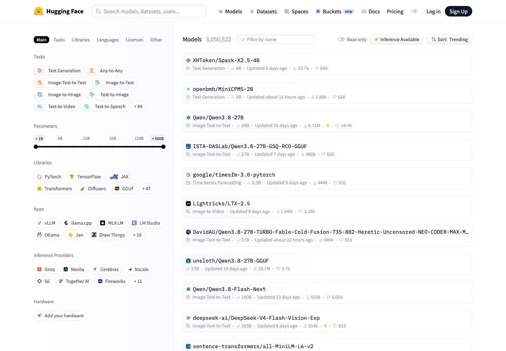
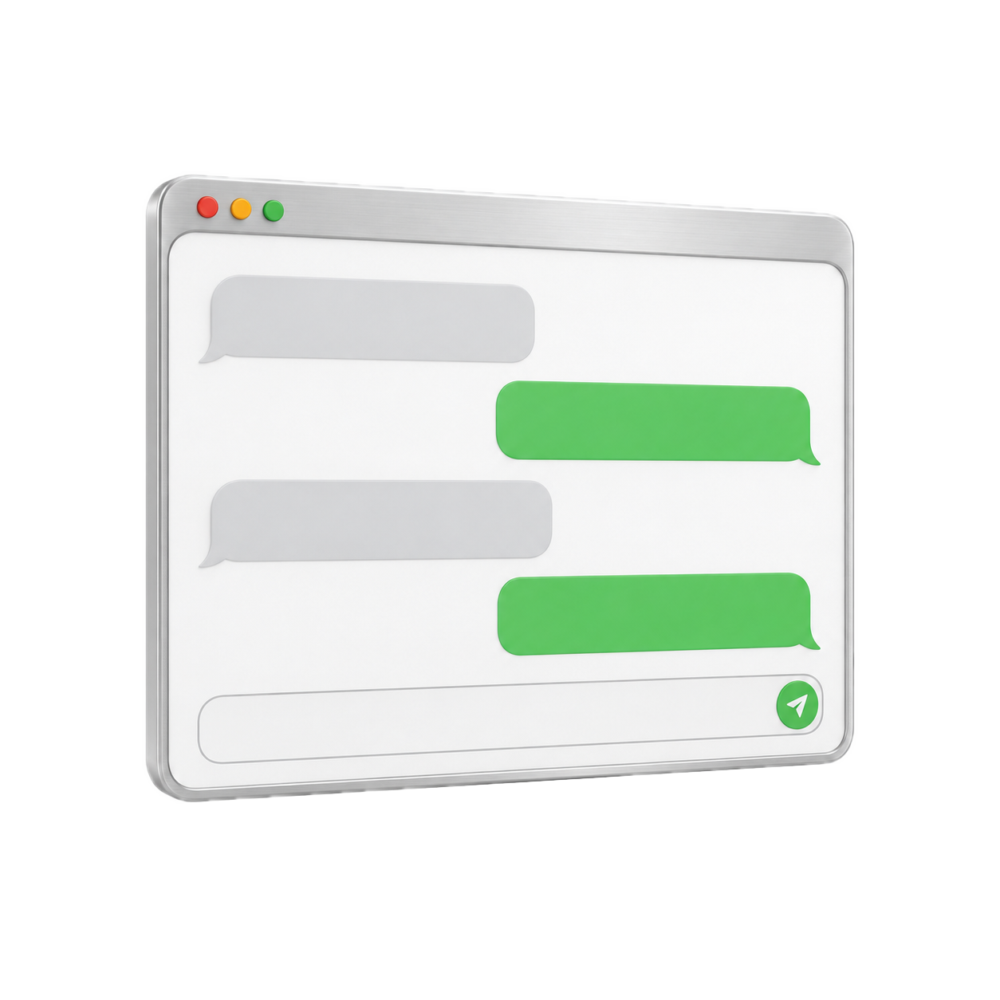
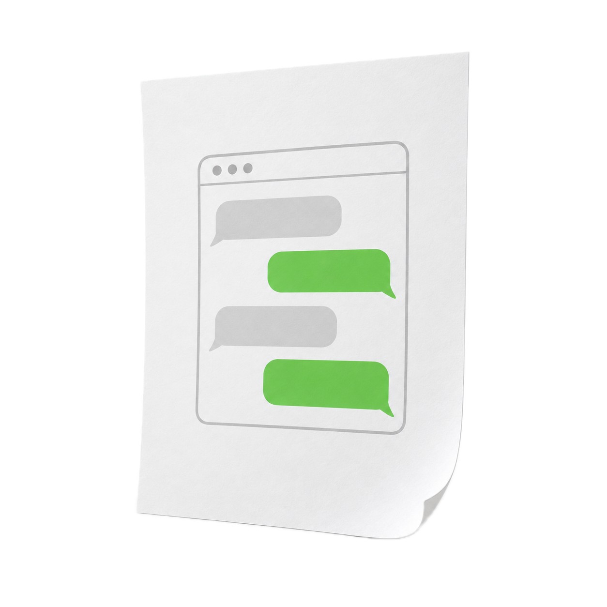
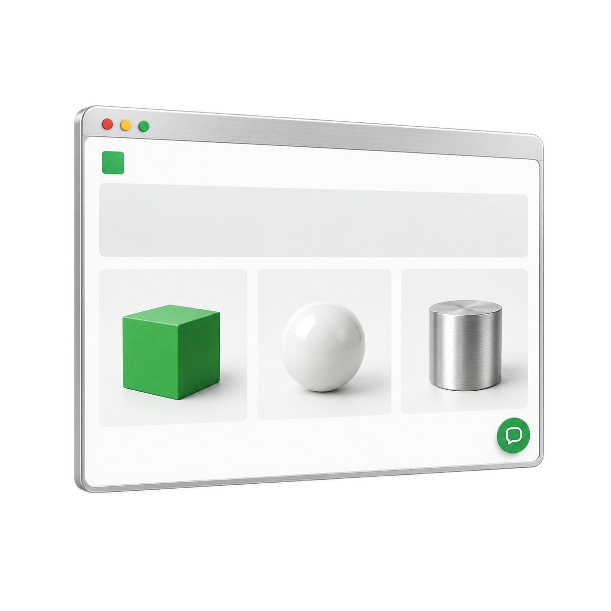
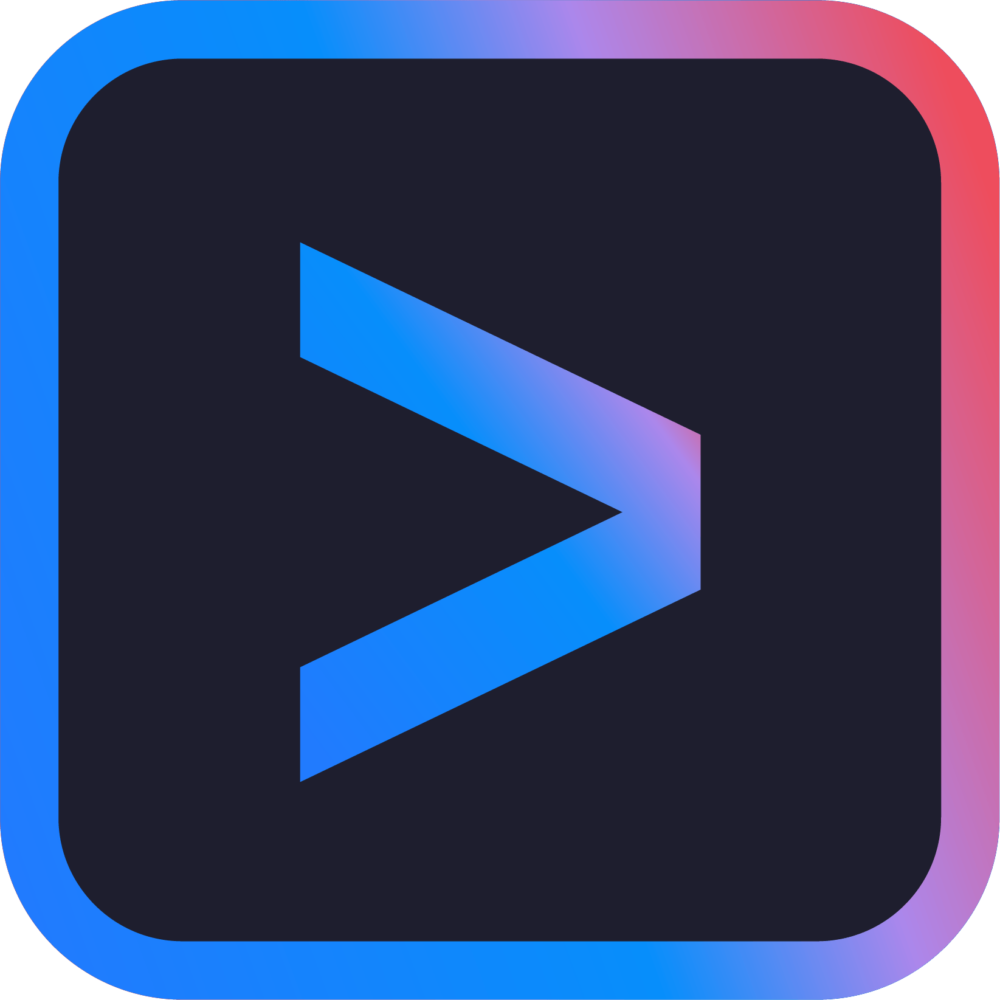
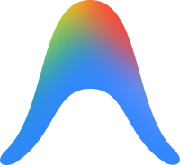
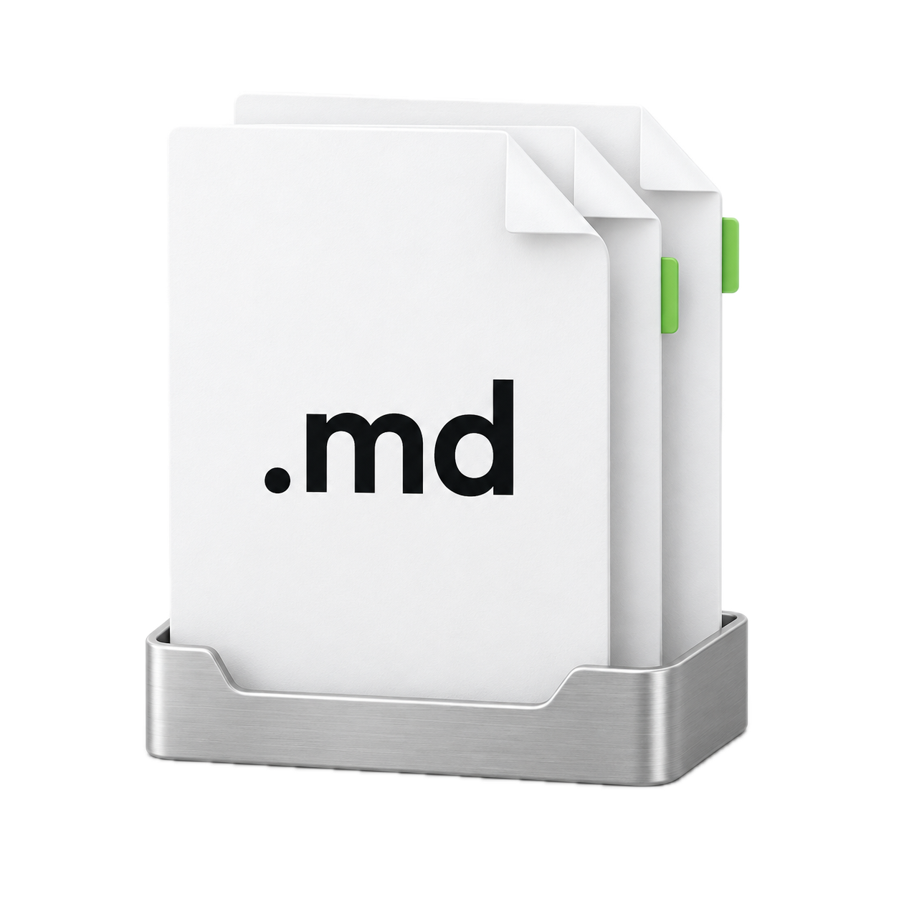
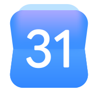
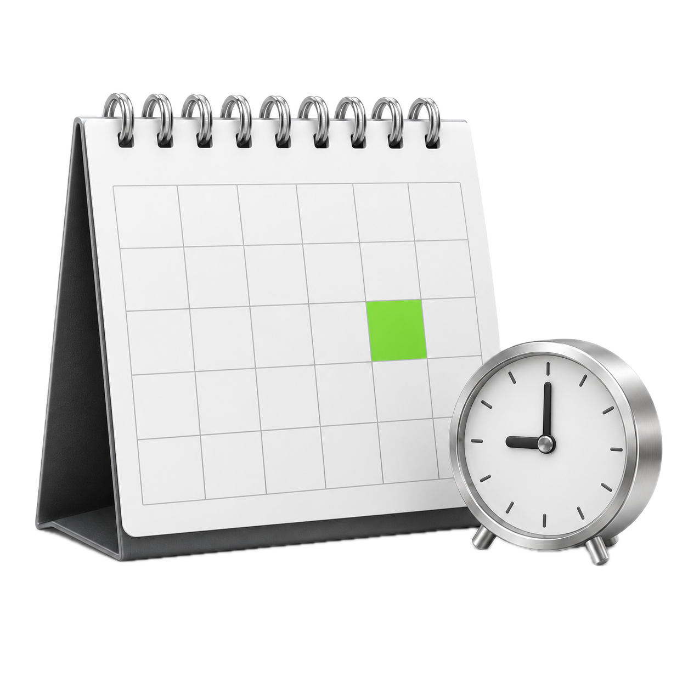
아침마다
맞는 공고만
컴퓨터 안에서
지원서 · 자기소개서
OK
OK 하면
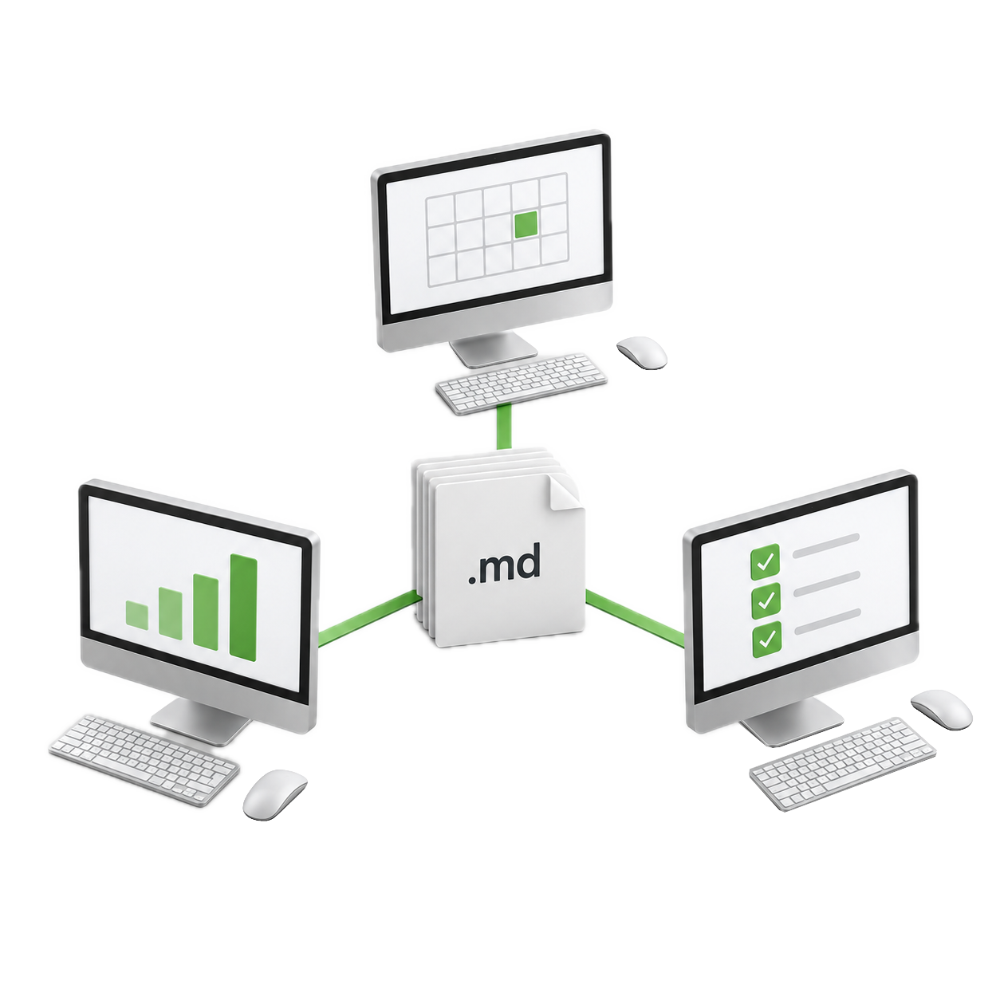
필요한 툴을 만들고
 OpenAIOpenAI
OpenAIOpenAI GPT-6 AstraOpenAIChatGPT
GPT-6 AstraOpenAIChatGPT Slack
Slack GitHub
GitHub OpenClaw
OpenClaw Pi
Pi Hermes
Hermes Codex CLICodexCodex
Codex CLICodexCodex